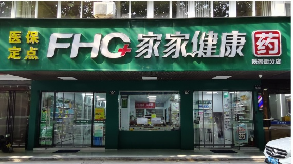
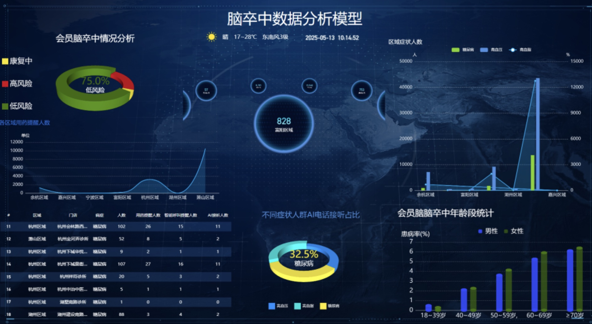
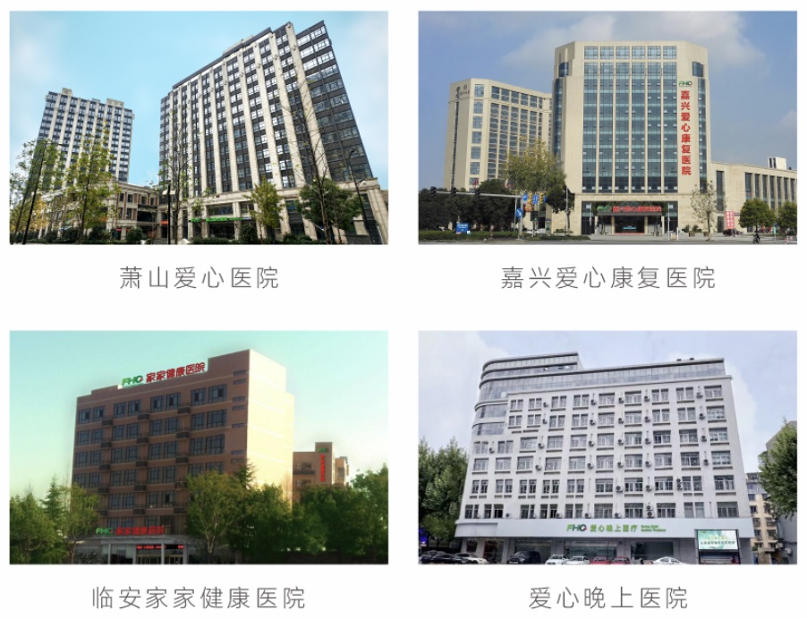
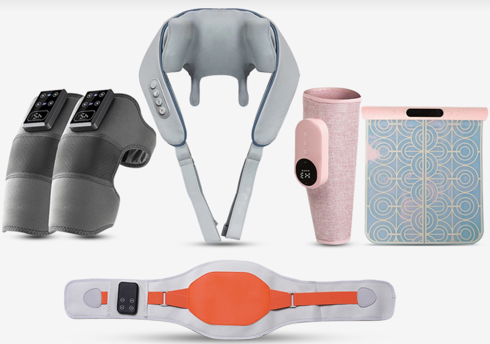
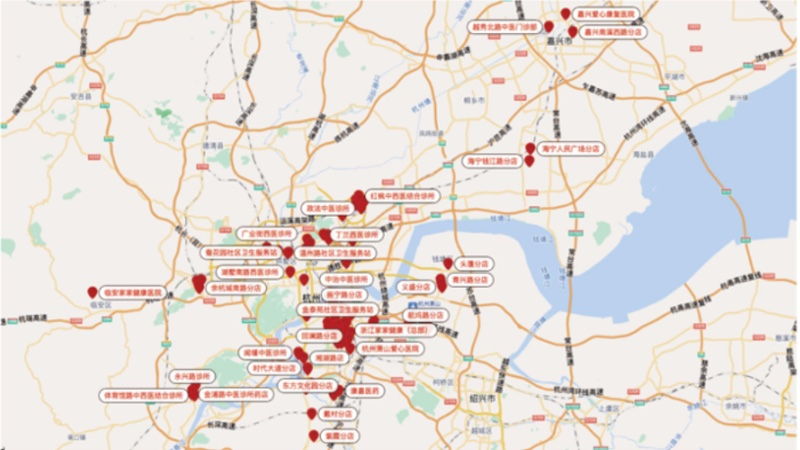

Health Services
Hospitals, community health stations, clinics, pharmacies and medicine consultation close to the people we serve.
Integrated healthcare · Zhejiang, China
Hospitals, community clinics, pharmacies and digital services working together to make quality healthcare more accessible.
One connected health ecosystem
Founded in Hangzhou in 2002, Family Health has grown from community healthcare into an integrated group serving families across Zhejiang.
We develop, invest in and operate healthcare services spanning hospitals, primary care, pharmacies, pharmaceutical supply, biotechnology and health technology. Across every business, our focus is the same: practical care, closer to home.
See our networkFour capabilities, one purpose
Our businesses share resources, expertise and infrastructure so patients and partners can move through healthcare with greater confidence.
Hospitals, community health stations, clinics, pharmacies and medicine consultation close to the people we serve.
Integrated supply, distribution and service capabilities connecting healthcare businesses with reliable medicine access.
Health product research, development and commercialization focused on practical wellness needs.
Digital tools that connect consultation, follow-up, medicine fulfillment, delivery and care at home.
Healthcare in the communities that need it
More than 200 locations bring hospital care, everyday health services and medicine access closer to families.

Care without distance
Family Health connects online services with real-world clinical and pharmacy operations, making it easier to continue care beyond the consultation room.
Visit online care
Beyond the point of care

Kangjia Medicine
Kangjia Medicine links pharmaceutical supply with healthcare and pharmacy operations, helping partners improve access, fulfillment and service continuity.
Kangbei Biotechnology
Kangbei Biotechnology researches, develops and brings to market wellness products designed around changing consumer health needs.

Rooted in Zhejiang
Our locations are concentrated across Hangzhou and surrounding communities, with a network designed to keep healthcare practical and accessible.
200+ locations today
More than two decades of progress
The company's first community health service station is established.
Xiaoshan Aixin Community Health Service Center is established, drawing strong government attention to its chain model.
The Aixin network is named a National Advanced Non-Governmental Organization by the Ministry of Civil Affairs.
Hangzhou Family Health Pharmacy Co., Ltd. is established, becoming the foundation of the pharmacy chain.
Hangzhou Health Products Research Institute is established.
Zhejiang Family Health Industrial Co., Ltd. is established.
Development preparations begin for Xiaoshan Aixin Hospital.
Development preparations begin for Lin'an Hospital.
Family Health Holding is established, beginning the group's clinic chain expansion.
Jiaxing Aixin Rehabilitation Hospital begins operations.
Zhejiang Kangbei Biotechnology Co., Ltd. is established.
Zhejiang Kangjia Pharmaceutical Co., Ltd. officially begins operations.
Aixin Night Hospital begins operations.
Family Health moves into its new headquarters in Hangzhou.
Family Health hosts the 2025 Health Industry High-Quality Cooperation Conference.
Partnerships
We collaborate with healthcare operators, researchers, suppliers and investors who share our commitment to accessible, high-quality care.
Call our partnership team